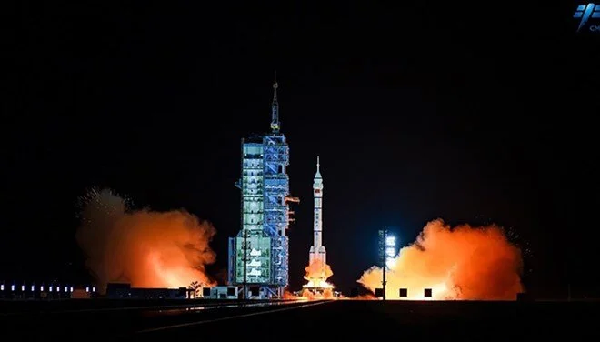

Teknoloji Haberleri
Yapay zeka ile dost olunabilir mi?
1984 yapımı Terminatör filminin ana konusu, yapay zekâ (YZ) tarafından yaratılmış Skynet adlı bir bilgisayar sisteminin, gelecekte insanlığa karşı savaş açarak onları yok etmeye çalışmasıdır. Bu savaşta, Skynet geçmişe terminatör adı verilen robotlar göndererek insan direnişinin lideri John Connor'ın doğuşunu engellemeye çalışır.
Psikolojik anlamda da, yapay zekâ ve insan ilişkisine dair olumsuz değerlendirmeler var. Bu bakış açısı; yapay zekânın insan iradesini ele geçirip yöneteceği, insan-yapay zekâ ilişkisinin asla eşit olamayacağı, yapay zekâ ile arkadaşlığının insanı diğer insanlardan ayırıp izole edeceği ve insan-YZ dostluklarının daha değerli olan insan-insan dostluklarını baltalayacağı gibi kaygılardan besleniyor.

Sonuç:Tüm diğer yeni teknolojilerde olduğu gibi, YZ' nın da yanlış kullanımı elbette zararlı olabilir ancak çoğu insan bu teknolojileri faydalı şekillerde kullanabilir ve bu da yaşamımıza yeni olanaklar getirebilir ve pek çok yeni gelişmeye ivme verebilir. Yani sorun yine YZ’da değil insan da başlıyor ya da bitiyor.
Yapay zeka tek fotoğrafla ölüm riskini tespit ediyor
59 binden fazla sağlıklı bireyin fotoğraflarıyla eğitilen bu model, yaşlanmanın biyolojik izlerini milimetrik bir hassasiyetle analiz ediyor.
Gerçek yaşından daha büyük görünen kişilerin erken ölüm olasılığının yüksek olduğunu belirleyen FaceAge'in, doktor değerlendirmelerinde de kullanılması bekleniyor.
Peki bu gelişme, her gün aynada gördüğümüz yüzümüzün hayati belirtiler taşıyabildiği anlamına mı geliyor?
Normalde hayati belirtiler; nabız, ateş, solunum ve tansiyon gibi objektif fizyolojik ölçümlerdir. Ancak bu çalışma, bir fotoğrafın da en az bu veriler kadar bilgi taşıyabileceğini öne sürüyor. Özellikle kanser hastalarında, görünüşle biyolojik yaş arasındaki farkın dikkat çekici şekilde belirgin olduğu tespit edildi. Bu teknolojinin ruh sağlığı üzerinde de çeşitli etkileri olabileceği düşünülüyor. Siz yaşlı hissetmiyorsanız bile, yapay zekanın bunun aksini iddia etmesi, kaygı seviyenizin yükselmesine yol açabilir.
Çin rekabeti uzaya taşıdı: İlk süper bilgisayar inşa ediliyor
Çin Havacılık, Uzay Bilim ve Teknoloji Şirketi'ne göre, uzaydaki dev bilgisayar ağı için uydu fırlatılmaya başlandı.
Uzay, Çin ve ABD arasındaki rekabet için giderek artan bir sınır demek. Uzaya bir bilgisayar ağı yerleştirmek veri işleme için Dünya'ya olan bağlantılara bağımlı bırakıyor.
Çin'in planladığı uydu takımyıldızı, ağın bu tür kısıtlamalardan bağımsız olarak çalışmasına olanak tanıyacak.
Dünya tabanlı bilgi işlemin gerektirdiği maliyetli soğutma sistemlerine olan ihtiyacı ortadan kaldıracak ve yere bağlı olma risklerinden kurtaracak. Uydular ayrıca çatışma durumunda potansiyel askeri avantajlar sağlayacaktır.

ÇİN VE ABD YARIŞI YOĞUNLAŞTI
Yeni ağın yapay zeka kapasitesi, Çin ile ABD arasındaki yapay zeka yarışının yoğunlaştığını ortaya koyuyor.
Çin'in kuzeyindeki Jiuquan Uydu Fırlatma Merkezi'nden 14 Mayıs tarihinde Uzun Yürüyüş 2D roketiyle 12 uydunun fırlatıldığı bildirildi.
Bilim ve Teknoloji Bakanlığı'nın resmi gazetesi olan Çince ST gazetesinin haberine göre, tek bir bilgisayar ağı üzerinden lazerle birbirine bağlanacak 2 bin 800 uydunun bulunması planlanıyor.
Şirkete göre uydu sayısı, Elon Musk'ın SpaceX'inin Starlink iletişim ağıyla karşılaştırıldığında hala küçük.
SpaceX , dünyanın en büyük uydu takımyıldızı ve Şubat ayı sonuna kadar yörüngede 6 bin 750'den fazla uyduya sahipti. Fırlatmalar devam ediyor ve sonunda 30 binden fazla uyduya ulaşabilir.
Nvidia’dan kuantum adımı
Çip devi Nvidia, kuantum bilişim sistemlerine yatırım yapma kararı aldı.

The Information'ın haberine göre, Nvidia kuantum bilişim girişimi PsiQuantum'a yatırım yapmak için ileri düzeyde görüşmeler yapıyor.
PsiQuantum'un aralarında BlackRock'ın da bulunduğu yatırımcılardan Mart ayında 6 milyar dolar değerleme üzerinden en az 750 milyon dolar topladığı bildirilmişti.
Nvidia'nın son yatırımı, kuantum bilişim duruşunda bir değişime işaret ediyor. Mart ayında CEO Jensen Huang, daha önce pratik kuantum bilgisayarların muhtemelen 20 yıl uzakta olduğunu belirtmesine rağmen, Boston'da Harvard ve MIT bilim insanlarıyla işbirliği yapacak yeni bir kuantum bilişim araştırma laboratuvarını duyurdu.
PsiQuantum, egzotik malzemelere dayanan kuantum bilişim girişimlerinin aksine, geleneksel yarı iletken üretim tekniklerinden yararlanıyor.
Şirket, önümüzdeki yıllarda biri Brisbane'de diğeri Chicago'da olmak üzere iki kuantum bilgisayarı kurmak için Avustralya ve Amerika Birleşik Devletleri hükümetleriyle birlikte çalışıyor.
Elon Musk'tan Tesla açıklaması: Ölmediğim sürece devam edeceğim
Tesla CEO'su Elon Musk, "ölmediği sürece" önümüzdeki 5 yıl boyunca Tesla CEO'su olmaya devam edeceğini söyledi.

Dünyanın en zengin insanı Elon Musk, Katar'da düzenlenen bir ekonomi forumunda yaptığı açıklamada, "ölmediği sürece" önümüzdeki beş yıl boyunca Tesla'nın CEO'su olarak kalmaya kararlı olduğunu söyledi.
Musk, Tesla’nın başında kalmasının en önemli koşulunun şirket üzerinde makul bir kontrol sahibi olmak olduğunu belirtti.
"EN ZAYIF PAZAR AVRUPA"
Tesla'nın zaten “başarılı bir dönüşüm” geçirdiğini ifade eden Musk, şirketin en zayıf pazarının Avrupa olduğunu, diğer bölgelerde ise talebin güçlü kaldığını dile getirdi.
Musk ayrıca, internet hizmeti Starlink'in gelecekte halka arz edilebileceğini ancak bunun için acil bir plan olmadığını söyledi.
Starlink’in şu anda dünya genelinde 70’ten fazla ülkede faaliyet gösterdiğini belirten Musk, özellikle Hindistan gibi gelişmekte olan pazarlarda büyümeye odaklandıklarını vurguladı.
Yapay zeka sektörüne ilişkin değerlendirmelerde de bulunan Musk, ABD’de bu alanda bazı düzenlemelerin olması gerektiğini, ancak sektörün aşırı şekilde regüle edilmemesi gerektiğini savundu.
Musk’ın yapay zeka şirketi xAI, daha gelişmiş modellerin eğitimi için veri merkezi kapasitesini artırmayı hedefliyor. Bu amaçla milyarlarca dolarlık yatırım toplandığı belirtiliyor.
Şirketin Tennessee eyaletinin Memphis kentinde kurduğu “Colossus” adlı süper bilgisayar kümesi, dünyanın en büyüklerinden biri olarak gösteriliyor.
Teknolejik Ürün Haberleri
Apple, M4 İşlemcili Yeni iPad Pro'yu Tanıttı
Apple, mobil cihazlarda performans çıtasını bir kez daha yukarı taşıyan yeni iPad Pro modellerini resmen duyurdu. Bu modeller, Apple’ın şimdiye kadar geliştirdiği en güçlü çip olan M4 işlemcisi ile donatıldı.

Yeni iPad Pro’lar, önceki nesillere kıyasla daha ince, daha hafif ve çok daha güçlü. En dikkat çekici yeniliklerden biri ise OLED ekran teknolojisi. Bu ekranlar, çok daha canlı renkler ve yüksek kontrast oranı sunarak görsel deneyimi ileriye taşıyor. Ayrıca yeni Apple Pencil Pro, titreşimli geri bildirim (haptic feedback) ve kalem üzerindeki basınca duyarlı sensörlerle geliyor. Bu sayede çizim, yazı ve tasarım süreçlerinde daha hassas ve doğal bir kullanım sağlanıyor. Yeni iPad Pro, hem yaratıcı profesyoneller hem de öğrenciler için güçlü bir mobil iş istasyonu olarak öne çıkıyor.
Samsung Galaxy Ring: Giyilebilir Teknolojide Yeni Adım
Samsung, giyilebilir teknoloji alanında ezber bozan yeni ürünü Galaxy Ring ile karşımızda. Akıllı yüzük konsepti, hem şık bir aksesuar hem de sağlık takibi yapan bir cihaz olarak dikkat çekiyor.

Galaxy Ring; kalp atış hızı, uyku düzeni, stres seviyesi ve günlük aktiviteleri ölçebilen gelişmiş sensörlerle donatıldı. Oldukça hafif ve ergonomik yapısıyla parmakta klasik bir yüzük gibi dururken, içindeki teknolojilerle adeta mini bir sağlık laboratuvarı gibi çalışıyor. Kullanıcılar bu yüzük sayesinde günlük yaşamlarını daha sağlıklı bir şekilde takip edebiliyor. Özellikle spor yapanlar, sağlığına dikkat eden bireyler ve minimal tasarımlı teknoloji ürünlerini tercih edenler için Galaxy Ring oldukça ideal bir seçenek olarak öne çıkıyor.
Lenovo’dan Şeffaf Ekranlı Laptop Konsepti
Lenovo, 2025 Mobil Dünya Kongresi’nde (MWC) teknoloji dünyasını şaşırtan bir konsept tanıttı: Tamamen şeffaf ekrana sahip bir dizüstü bilgisayar.
Bu etkileyici prototip, şeffaf OLED ekranıyla kullanıcılara ekranın arkasını görebilme imkânı sunuyor. Aynı zamanda bu teknoloji, artırılmış gerçeklik (AR) uygulamalarıyla uyumlu çalışarak gerçek dünya ile dijital bilgiyi bir araya getiriyor. Ultra ince tasarımı, dokunmatik ekran özellikleri ve yenilikçi yapısıyla bu cihaz, gelecekte dizüstü bilgisayarların nasıl dönüşebileceğine dair güçlü sinyaller veriyor. Henüz satışa sunulmamış olsa da, Lenovo'nun bu konsepti teknoloji severlerde büyük merak uyandırmış durumda.
Tesla’nın Optimus Gen 2 Robotu Sahneye Çıktı
Tesla, insansı robot projesi Optimus’un ikinci neslini, yani Optimus Gen 2 modelini tanıttı. Yeni model, ilk versiyona göre çok daha gelişmiş ve insan hareketlerine daha yakın kabiliyetler sergiliyor.

Optimus Gen 2, %20 daha hafif olmasının yanı sıra daha dengeli ve esnek bir yapıya sahip. Robot artık yürüme, eğilme, nesne taşıma gibi görevleri daha doğal bir şekilde gerçekleştirebiliyor. Yapay zekâ destekli sensörleri sayesinde çevresini algılayabiliyor ve verilen komutlara göre otonom olarak hareket edebiliyor. Elon Musk, bu robotların gelecekte ev işleri, yaşlı bakımı, hatta fabrika işçiliği gibi alanlarda insanlara yardımcı olabileceğini belirtti. Tesla, bu atılımıyla sadece otomotiv değil, robot teknolojisinde de ciddi bir oyuncu olduğunu göstermiş oldu.